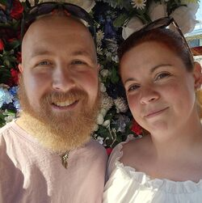

Wie is Lennard

Lennard, 30 jaar en actief in de wereld van hondensport, geschiedenis en beveiligingsinstallaties. Met nu dan ook een vleugje design.
Al op jonge leeftijd in contact met honden via mijn vader, die ook het train/africht virus heeft overgrdragen. Maar van deze hobby is bewust nooit een beroep gemaakt.
Hoewel de hobby toch iets of wat uit de klauwen is gelopen, ben ik nu Voorzitter van een vereniging en instructeur van beide hond en geleider combinaties.
Tijdens de toch lange loopbaan als beveiliger op rustige wijze met installatietechniek en andere tehcnische aspecten in aanraking gekomen.
En na 10 jaar bewaken de sprong gemaakt van fysieke bewaking naar de installatietechniek beveiligingsinstallaties. Waar ik mijzelf enorm heb mogen ontwikkelen in de security prof die ik nu ben.
Sinds Maart 2023 het geluk gehad het productmanagement en ontwikkeling team te versterken en nu sinds 01-05-2025 full time productmanager!
Anders in mijn vrije tijd spendeer ik aan geschiedenis in de breedste zin met een sterke facinatie voor mythologie. Van de Romeinen en Grieken tot Egyptenaren en Noormannen.